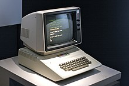

Computadores
O computador é um conjunto de componentes eletrônicos capaz de executar variados tipos de algoritmos e tratamento de informações (processamento de dados). Este dispositivo pode possuir inúmeros atributos, dentre eles: armazenamento de dados, processamento de dados, cálculo em grande escala, desenho industrial, tratamento de imagens gráficas, realidade virtual, entretenimento e cultura.
No passado, o termo já foi aplicado a pessoas responsáveis por algum cálculo. Em geral, entende-se por computador um sistema físico que realiza algum tipo de computação. Existe ainda o conceito matemático rigoroso, utilizado na teoria da computação.
Assumiu-se que os computadores pessoais e laptops são ícones da Era da Informação e isto é o que muitas pessoas consideram como "computador". Entretanto, atualmente as formas mais comuns de computador em uso são os sistemas embarcados, pequenos dispositivos usados para controlar outros dispositivos, como robôs, câmeras digitais ou brinquedos.
